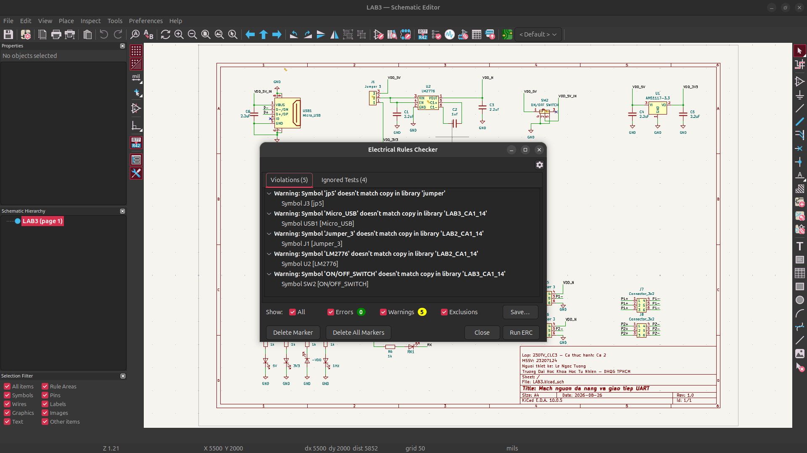
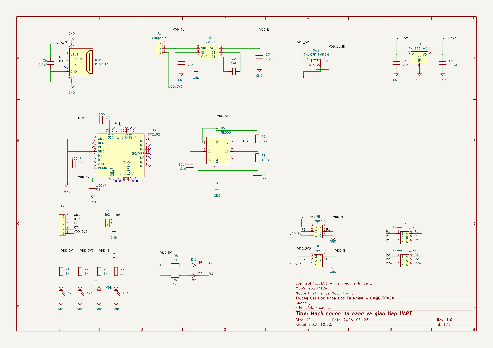
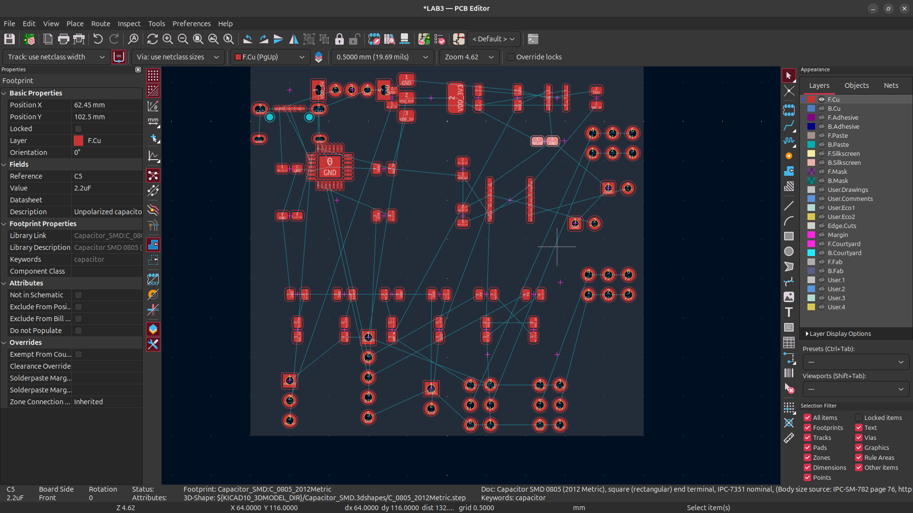
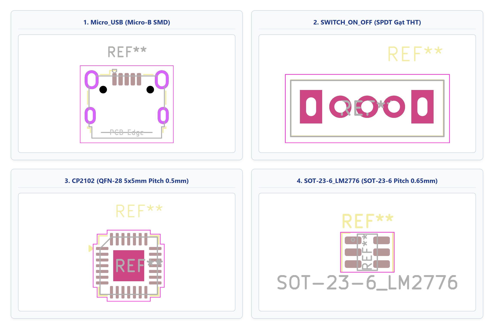
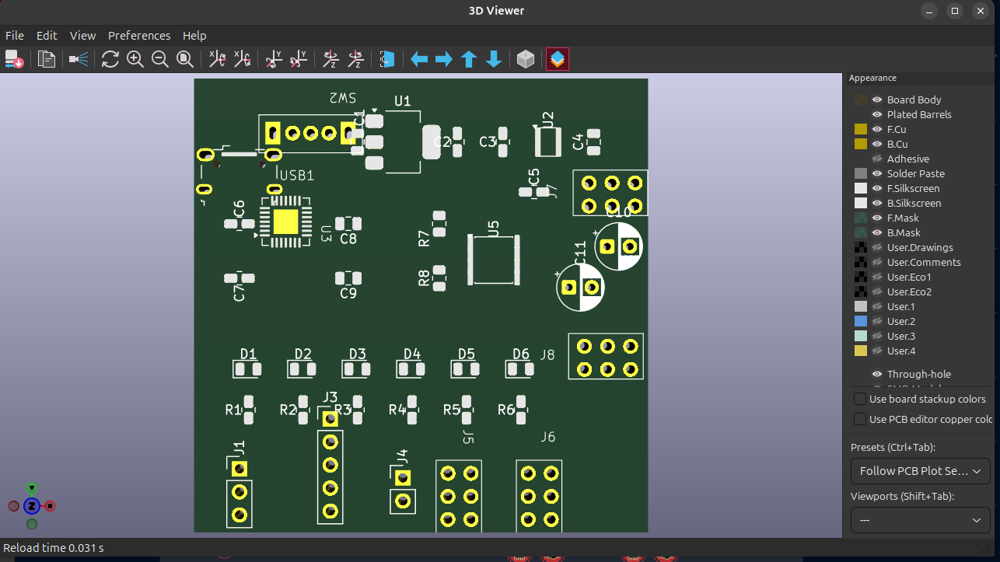

| Họ và tên: | Lê Ngọc Tường |
| MSSV: | 23207124 |
| Lớp: | 23DTV_CLC3 |
| Môn học: | Thiết kế mạch in PCB với KiCad (HK3/2025-2026) |
Sơ đồ nguyên lý mạch nguồn đa năng và giao tiếp UART gồm các khối chức năng: mạch chuyển đổi USB-UART CP2102, IC ổn áp tuyến tính AMS1117-3.3, mạch tạo điện áp âm LM2776 và mạch tạo xung NE555. Sau khi vẽ và gán nhãn kết nối, công cụ Electrical Rules Checker (ERC) được dùng để kiểm tra tính đúng đắn của sơ đồ.
Kết quả kiểm tra quy tắc điện trên KiCad xác nhận mạch không còn lỗi (0 Errors):

VCC, GND của IC U1 (AMS1117-3.3), U2 (LM2776), U3 (CP2102) và U5 (NE555).VDD_5V, VDD_3V3, GND có thuộc tính điện là Power input. KiCad yêu cầu mỗi net nguồn phải có ít nhất một chân phát kiểu Power output điều khiển.PWR_FLAG (chọn từ thư viện power) vào đường nguồn đầu vào VBUS (từ cổng Micro USB) và đường mass GND của mạch.No Connect Flag (phím tắt Q) vào các chân không dùng.Cách khắc phục: Đi lại dây nối (phím W) và đặt điểm nối Junction (phím J) tại các vị trí phân nhánh.
Cảnh báo (Warnings): Symbol mismatch with library cache
jumper:jp5, LAB3_CA2_14:Micro_USB, LAB2_CA2_14:Jumper_3, LAB2_CA2_14:LM2776, LAB3_CA2_14:ON/OFF_SWITCH).LAB3.kicad_sch, các chân kết nối chính xác và đạt 0 lỗi nên chuyển sang bước layout mạch in.
Nội dung Bài tập 2 gồm: lập bảng đối chiếu linh kiện - Package - Footprint, thiết kế các Footprint tùy chỉnh cho linh kiện chưa có sẵn trong thư viện và kiểm tra mô hình 3D của các linh kiện đã gán.
Dựa trên datasheet của linh kiện và danh mục vật tư (BOM), toàn bộ 38 linh kiện trên sơ đồ đã được gán Footprint tương ứng:
| Ký hiệu | Giá trị | Package Datasheet | Footprint trong KiCad | Nguồn thư viện |
|---|---|---|---|---|
| U1 | AMS1117-3.3 | SOT-223-3 | Package_TO_SOT_SMD:SOT-223-3_TabPin2 |
KiCad Standard |
| U2 | LM2776 | SOT-23-6 | Package_TO_SOT_SMD:SOT-23-6 |
KiCad Standard |
| U3 | CP2102 | QFN-28 (5×5 mm) | LAB3_CA2_14:CP2102 |
Thư viện đồ án |
| U5 | NE555 | SOIC-8 | Package_SO:SO-8_3.9x4.9mm_P1.27mm |
KiCad Standard |
| USB1 | Micro_USB | Micro-B SMD | LAB3_CA2_14:Micro_USB |
Thư viện đồ án |
| SW2 | ON/OFF SWITCH | SPDT gạt THT | LAB3_CA2_14:SWITCH_ON_OFF |
Thư viện đồ án |
| C1-C6 | 2.2 µF / 1 µF | 0805 SMD | Capacitor_SMD:C_0805_2012Metric |
KiCad Standard |
| C7-C9 | 100 nF | 0805 SMD | Capacitor_SMD:C_0805_2012Metric |
KiCad Standard |
| C10, C11 | 10 µF (Tụ hóa) | Radial D5.0 mm | Capacitor_THT:CP_Radial_D5.0mm_P2.50mm |
KiCad Standard |
| R1-R6 | 1 kΩ | 0805 SMD | Resistor_SMD:R_0805_2012Metric |
KiCad Standard |
| R7, R8 | 47 kΩ / 100 kΩ | 0805 SMD | Resistor_SMD:R_0805_2012Metric |
KiCad Standard |
| D1-D6 | LED hiển thị | 0805 SMD | LED_SMD:LED_0805_2012Metric |
KiCad Standard |
| J1, J5, J6 | Jumper 3 chân | Header 1x03 P2.54 | Connector_PinHeader_2.54mm:PinHeader_1x03_P2.54mm_Vertical |
KiCad Standard |
| J3, J4 | Header 5P / 2P | Header 1x05 / 1x02 | Connector_PinHeader_2.54mm:PinHeader_1x05 / 1x02_Vertical |
KiCad Standard |
| J7, J8 | Connector 3×2 | Header 2x03 P2.54 | LAB3_CA2_14:Connector 3x2 |
Thư viện đồ án |
Sau khi gán Footprint, sơ đồ được cập nhật sang giao diện PCB Editor bằng tính năng Update PCB from Schematic (phím tắt F8):

Các linh kiện chưa có sẵn trong thư viện chuẩn (cổng Micro USB, Switch gạt ON/OFF, CP2102 QFN-28 và LM2776 SOT-23-6) được tạo trong Footprint Editor dựa theo thông số kỹ thuật của nhà sản xuất:
- Xác định loại Pad (SMD hoặc Through-hole), kích thước pad và đường kính lỗ khoan.
- Thiết lập khoảng cách chân chính xác (Micro USB pitch 0.65 mm, CP2102 pitch 0.5 mm, Header pitch 2.54 mm).
- Vẽ các lớp gia công: F.Cu (lớp đồng), F.Mask (mặt nạ hàn), F.SilkS (lớp in lụa đánh dấu chân 1) và F.CrtYd (vùng biên an toàn của linh kiện).

Sau khi hoàn tất gán footprint, mô hình 3D của bo mạch được kiểm tra trong công cụ 3D Viewer của KiCad để xác nhận vị trí, kích thước và hình dáng linh kiện:
